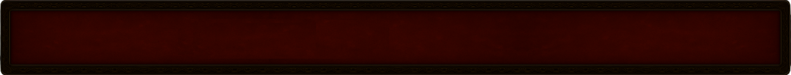
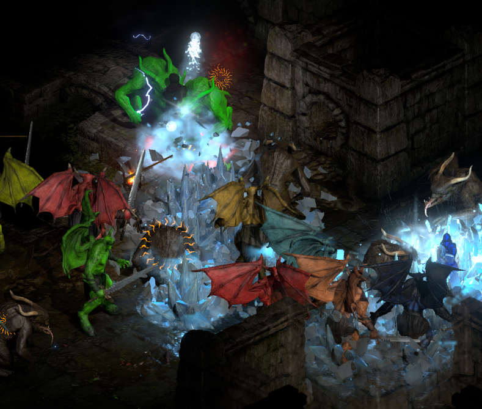
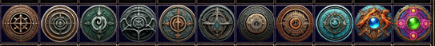
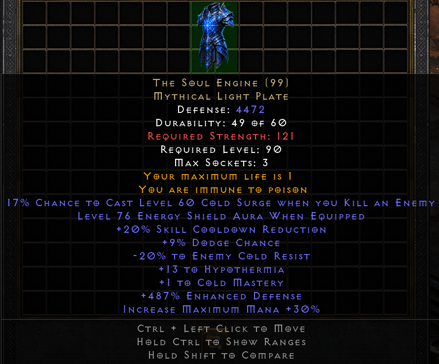
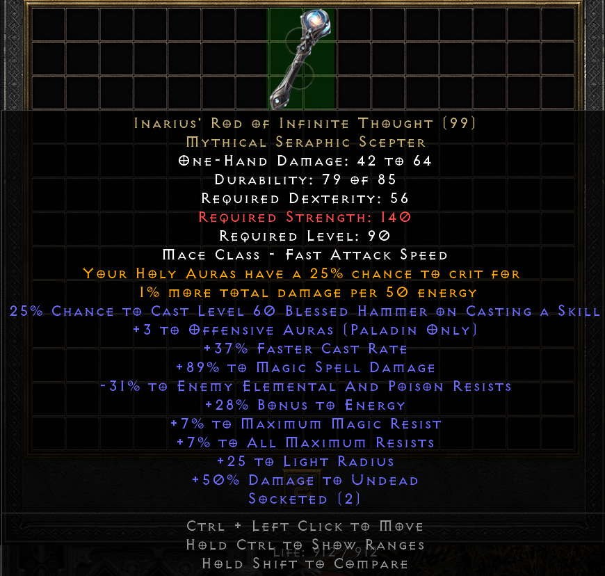
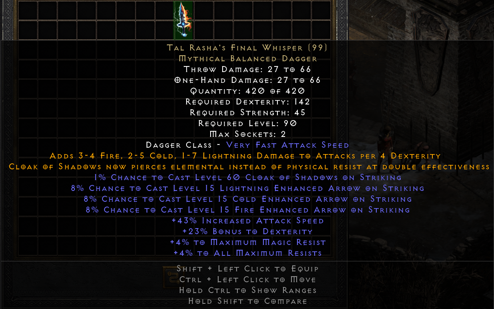

Eastern Sun Resurrected 是对暗黑破坏神 II：狱火重生的全面重新构想，以经典模组 Eastern Sun 为基础，并大幅扩充。探索一个所有物品都经过重制、大多数技能都经过重新平衡或被自订技能取代、剧情也重新设计得更引人入胜的世界。突破 99 级，进入充满残酷超级挑战、全新物品，并可成长到 110 级的复杂终局内容。深入极其复杂的合成系统，运用新的试剂、强大的受膏与高风险的堕落。最后，晋升为 15 种独特升华职业之一来打造你的配置，每种职业都提供不同的玩法与装备路线。
重新平衡的技能系统
模组中几乎所有技能都经过重新设计，提供独特的功能、更好的成长性与更强的终局实力。多余或少用的能力已被取代或重做，以加入新机制，或单纯让它们比旧版更好。有几项能力具有改变战斗用法的独特机制。目标是让每个技能都有意义且具竞争力。
全面翻新的剧情难度
游戏中大多数怪物都经过重新平衡或重新设计，让整段剧情都更具挑战性也更有趣。敌人的属性、AI 行为与技能使用都经过重做，带来更具挑战的体验。终局则有具备自订能力的全新敌人，比剧情中的怪物强悍得多。
全新的终局系统
终局内容围绕著重玩性极高的地图系统。地图是消耗品，可开启布局随机、难度递增的高等级区域。每个阶层的奖励越来越好，头目战也越来越难，其中一些头目会掉落特殊奖励。这套系统提供可重复的终局刷宝，让你迈向全新的 110 级上限。





神话暗金
神话暗金是一个全新阶层的强大终局物品，旨在重新定义配置并带来全新的玩法。每件物品都具有其他装备上没有的专属词缀或机制，经常会改变技能行为、成长性或角色的核心互动。与一般暗金物品不同，这些物品极为稀有，只会在新的终局地图中掉落。
升华
升华系统引入强大的子职业专精，从根本上改变每个职业的玩法与装备搭配。完成特定挑战后，玩家可以从数种升华中选择一种，每种都提供独特加成。升华旨在扩展配置的多样性，让玩家能围绕特定属性和/或机制打造角色。
合成系统
Eastern Sun Resurrected 拥有 ARPG 中最复杂的合成系统之一，包含数千种独特配方。大多数配方都可重复并互相组合，让玩家能分多个步骤精炼、升级，甚至彻底改造物品。
此外，新的仓库分页提升了便利性，让你能随时转换合成材料。
全新的十字弓机制
在 Eastern Sun Resurrected 中，十字弓经过根本性的重做。所有十字弓现在都有装填机制。预设最多可发射 3 支十字弓矢，用掉的十字弓矢会一支一支重新装填。作为补偿，十字弓拥有大幅的总伤害加成，而且实际攻击动画固定为 0.2 秒。
专属启动器
Eastern Sun Resurrected 附有专属启动器，内含复杂的掉落物过滤器、更新说明支援等功能。